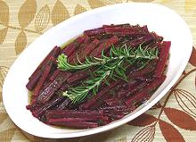

|
Marinated Beet StemsCalifornia | ||||
| Serves: Effort: Sched: DoAhead: |
2 salad ** 1 day Yes |
A surprisingly delicious way to use those stems you got with those bunches of fresh beets - marinated à la Grecque. Use the greens for delicious Beet Green Pesto or Sautéd Greens. | |||
|
|
10 ----- 1/4 3 1/4 1 1 1 1 1/2 1/4 ----- |
oz --- c T c T T t t --- |
Beet Stems (1) -- Marinade Olive Oil, ExtV Lemon Juice Water Parsley Leaves Herbs (2) Thyme sprig Bay Leaf Salt Pepper -------------- |
Make - (1 day - 20 min work)
|